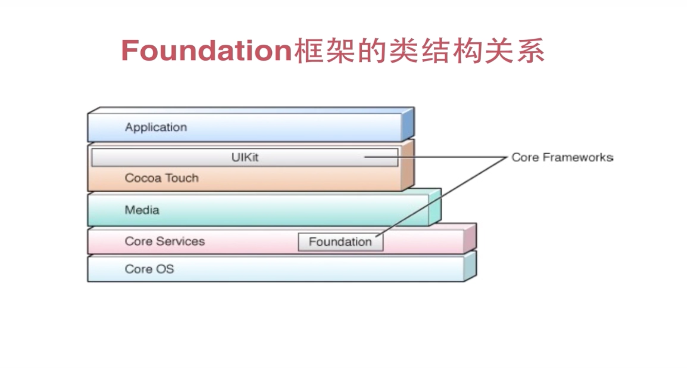

Foundation(基础框架) 课程知识比较多，所以后面会每个学习内容新建一个类去写。

新建一个项目， 文章源码,找不到则到finish里面找
String
新建一个String类1
2
3
4
5
@interface String : NSObject
-(void) stringBaseFn; // 声明一个函数，后面有关的字符串函数知识都写在该方法内
@end
1 | // 引入并调用该方法，主要是一些字符串的方法 以及输出 |
1 | // |
NSMutableString 可变字符串
新建一个 NSMutableStringClass 类。 NSMutableString是字符串的子类
1 | // |
1 | // |
1 | NSMutableStringClass *_NSMutableString = [[NSMutableStringClass alloc] init]; |
NSArray 不可变数组
新建一个arr类
1 | // |
NSMutableArr 可变数组
与可变字符串一样，数组也有可变的。一般项目中如果有修改数组的就用这个，如果不希望数组被修改则用不可变数组
1 | // |
字典 NSDictionary
相当于js 里的对象{}. 新建一个类NSDic
1 | // |
1 | // |
可变字段 NSMutableDictionary
1 | // |
1 | // |